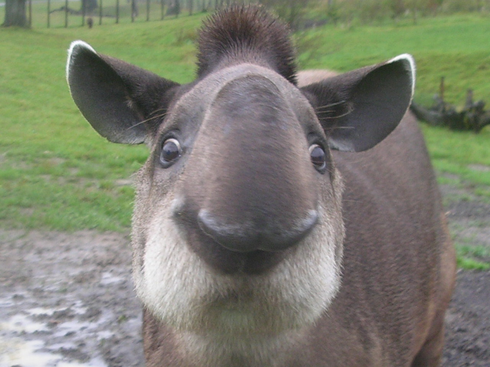
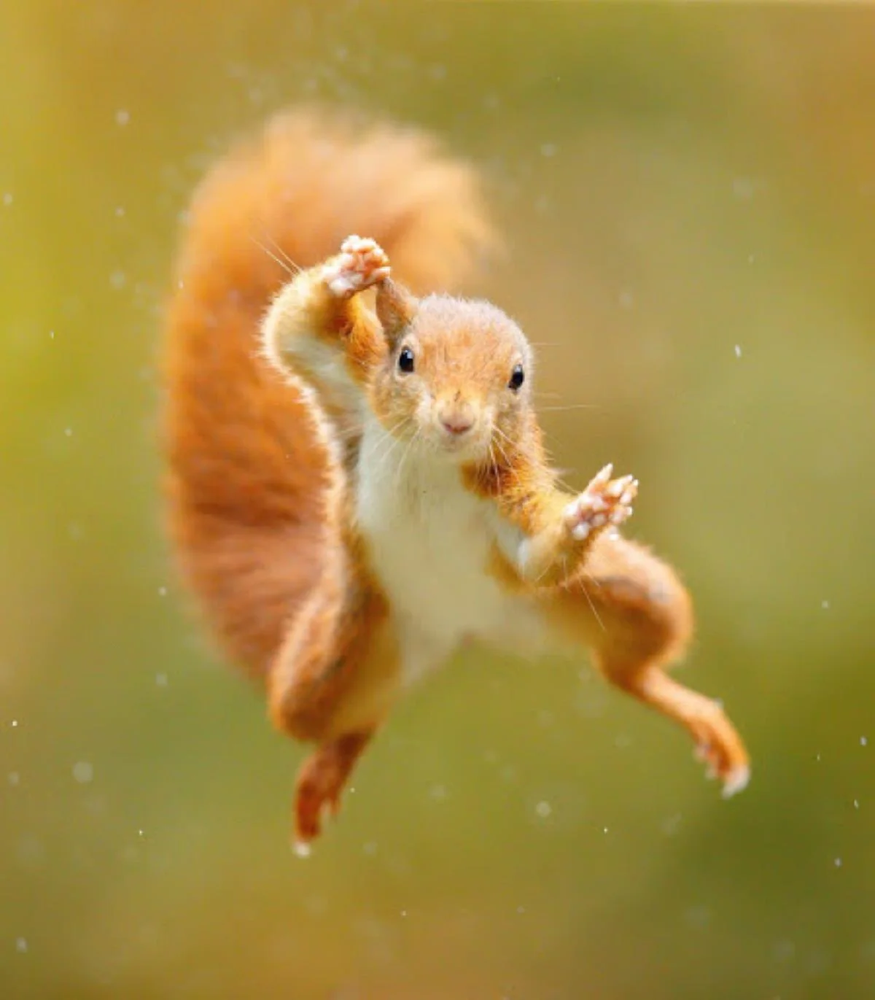

Живо́тные (лат. Animalia) — традиционно (со времён Аристотеля) выделяемая категория организмов, в настоящее время рассматриваемая в качестве биологического царства. Животные являются основным объектом изучения зоологии. Животные относятся к эукариотам (в клетках имеются ядра). Классическими признаками животных считаются: гетеротрофность (питание готовыми органическими соединениями) и способность активно передвигаться. Впрочем, существует немало животных, ведущих прикреплённый образ жизни, а гетеротрофность свойственна грибам и некоторым растениям-паразитам. Русское слово «животное» образовано от «живот», в прошлом означавшего «жизнь, имущество». В быту под терминами «дикие животные», «домашние животные» часто понимаются только млекопитающие или четвероногие наземные позвоночные (млекопитающие, пресмыкающиеся и земноводные). Однако в науке за термином «животные» закреплено более широкое значение, соответствующее латинскому Animalia (см. выше). В научном смысле к животным, помимо млекопитающих, пресмыкающихся и земноводных, относится огромное множество других организмов: рыбы, птицы, насекомые, паукообразные, моллюски, морские звёзды, черви и другие. Человек также относится к царству животных, отряду плацентарных млекопитающих, приматам[1], но традиционно изучается отдельно. При этом ранее к этому царству относили многих гетеротрофных протистов и делили животных на подцарства: одноклеточные Protozoa и многоклеточные Metazoa. Сейчас название «животные» в таксономическом смысле закрепилось за многоклеточными. В таком понимании животные как таксон имеют более определённые признаки — для них характерны оогамия, многотканевое строение, наличие как минимум двух зародышевых листков, стадий бластулы и гаструлы в зародышевом развитии. У подавляющего большинства животных есть мышцы и нервы, а не имеющие их группы — губки, пластинчатые, мезозои, книдоспоридии — возможно, лишились их вторично. В то же время, в науке термин «животные» иногда предлагается использовать и в ещё более широком значении, подразумевая под животными не таксон, а тип организации — жизненную форму, основанную на подвижности. В настоящее время (Zhang, 2013) учёными описано более 1,6 млн видов животных (включая более 133 тыс. ископаемых видов; Zhang, 2013), большинство из которых составляют членистоногие (более 1,3 млн видов, 78 %), моллюски (более 118 тыс. видов) и позвоночные (более 42 тыс. видов)[2][3].
 Внешность Размеры тапиров различаются от вида к виду, но как правило, длина тапира около 2 м, хвоста — 7-13 см, высота в холке около 1 м, масса от 110 до 300 кг. Продолжительность жизни на воле составляет около 30 лет. Детёныш рождается всегда один, беременность длится около 13 месяцев. Новорождённые тапиры обладают защитной окраской, состоящей из пятен и полос (как у поросят дикой свиньи), и хотя эта окраска кажется одинаковой, всё же у разных видов есть некоторые отличия. Передние ноги у тапиров четырёхпалые, а задние трёхпалые, на пальцах небольшие копытца, помогающие передвигаться по грязной и мягкой земле. Верхняя губа тапира вместе с вытянутым носом образует небольшой, но очень подвижный хоботок, который оканчивается пятачком, окружённым короткими чувствительными волосками
спс за внимание